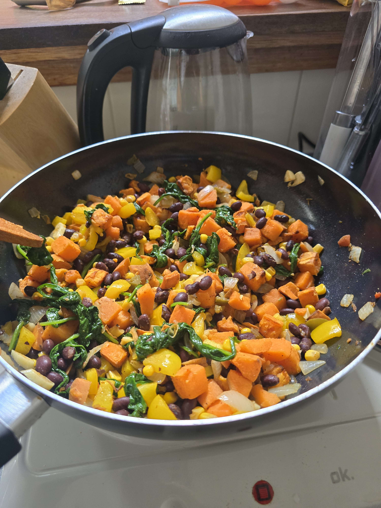

Sweet Potato and Bean Skillet
Description
Sweet potato and black beans are a match made in heaven, and with a little time
and added veggies, they can make for meal prep that will last days and satisfy
every time.
Ingredients
- 2 sweet potatoes, cooked and peeled*
- 1 can black beans, drained and rinsed
- 1 can kernel corn, drained and rinsed
- 1 bell pepper
- 1 white onion
- 3 gloves garlic, minced or sliced as you please
- 1 bag baby spinach
- 1 tbsp paprika (or to taste)
- 1 tbsp chili powder (or to taste)
- 1 tsp salt
- 1 tsp pepper
- olive oil as needed
*For my tips on cooking the sweet potato, check out this recipe
Steps
- Prep all veggies beforehand: chop onion into chunks; mince or slice
garlic; chop bell pepper into chunks similar in size to the onion;
cube sweet potato into bite-sized pieces; drain and rinse beans and
corn (these can be done in one strainer if easier); rinse spinach if
necessary.
- Heat a small amount of olive oil in pan over medium heat. Add onion and
garlic. Let them soften until fragrant and onions begin to turn
translucent.
- Add the beans and corn in, stirring together with the onion and garlic
until mixed and warm.
- Add in chili powder, paprika, salt, and pepper and mix.
- In a seperate bowl, toss the sweet potato chunks with a bit of oil and
a small amount of salt and pepper. Then add the chunks to the pan.
- Once potatoes have been incorporated, add bell pepper chunks into the pan.
- Taste test a bean at this point to determine whether the dish needs more
spice. Add if necessary.
- Once bell pepper is warmed through and beginning to soften, turn off heat
and add spinach. Allow the spinach to wilt over top of the other vegetables
and mix slowly to incorporate it as it does.
- Serve on its own or with sides. Works great with salsa and cheese for tacos.
Return to Home